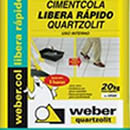
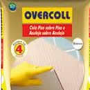
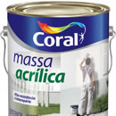

Cimentcola Libera rápido Quartzolit
Peso: 20kg
Uso indicado: Assentar cerâmicas até 45 cm x 45 cm em paredes e pisos de áreas internas.

Cimento Cola Quartzolit Overcol
Peso: 20kg
Uso indicado: Cimento Cola para assentamento de piso sobre piso.

Massa acrílica
Embalagem: 30 Kg, 6 Kg e 1,5 Kg.
Indicado para uniformizar, nivelar e corrigir pequenas imperfeições.